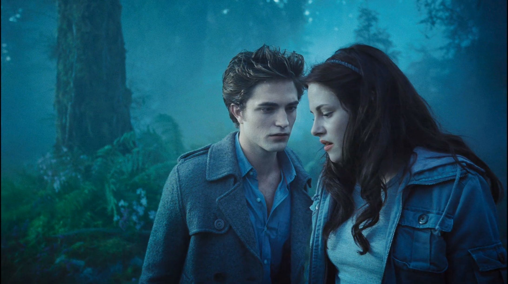
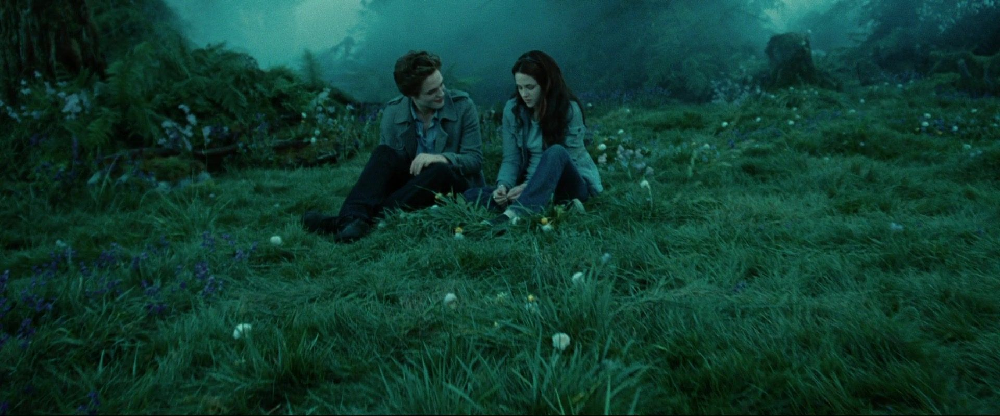

A Love Story Beyond Time and Species
- Main Actors: Kristen Stewart, Robert Pattinson, Taylor Lautner
- Director: Catherine Hardwicke
Ranking The Movies Based On Franchise
- The Twilight Saga: Eclipse
- The Twilight Saga: New Moon
- Twilight
- The Twilight Saga: Breaking Dawn - Part 2
- The Twilight Saga: Breaking Dawn - Part 1
This is my review of the first Twilight movie. Back when I was a teenager, Twilight was a big deal. I remember watching it with friends and getting swept up in the romantic story of Bella and Edward. Kristen Stewart and Robert Pattinson did a great job bringing the characters to life, and the movie's mix of love, vampires, and high school drama kept me hooked from start to finish. Looking back, Twilight might not be the most sophisticated film, but it holds a special place in my heart as a fun and nostalgic part of my teenage years.
It's worth noting that Twilight is just the beginning of the saga. There are a total of five movies, each continuing the story and exploring new twists and turns in Bella and Edward's relationship.
For more information about Twilight, visit the official Stephenie Meyer Twilight tab on her website!.
 